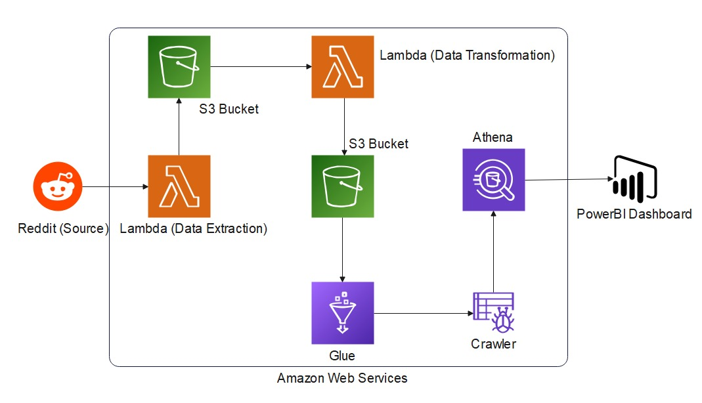
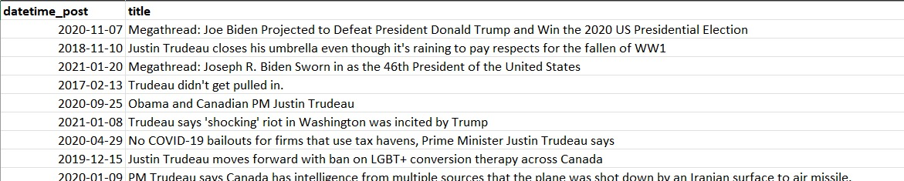
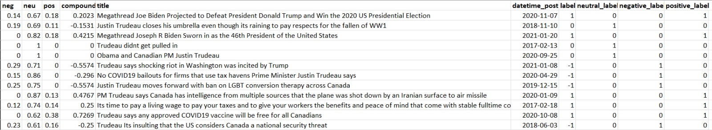
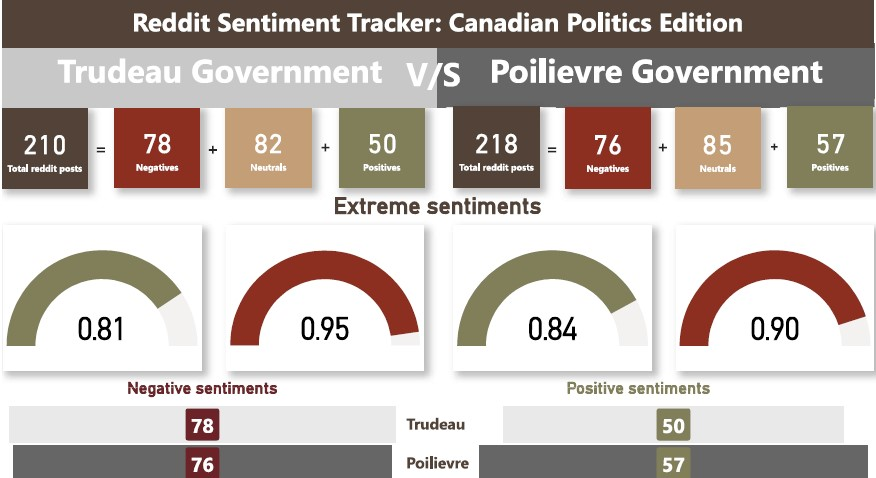

I spearheaded an end-to-end ETL-based Sentiment Analysis project centered on Canadian politics, leveraging data sourced from Reddit. The project is hosted on AWS, offering the capability for live data extraction and analysis. The primary objective was to gauge public sentiment toward the Trudeau and Poilievre governments based on Reddit posts.

ETL flow: Flow staring from the Extraction, Transformation till Load.
Utilized Reddit API for scraping data.
Extracted pertinent information - post dates and titles.
Executed data scraping in AWS Lambda using Python.
Stored raw data in an AWS S3 bucket.
Performed ETL processes using the NLTK library and VADER Lexicon for sentiment analysis.
Calculated polarity scores (neg, neu, pos, compound) for each title.
Created additional columns for sentiment labels based on the compound score.
Transformed data stored in a respective location in the S3 bucket.
Established tables in AWS Athena through the ETL process, ensuring compatibility with the transformed data.
Developed a PowerBI dashboard titled "Reddit Sentiment Tracker: Canadian Politics Edition."
Focused on key metrics related to the Trudeau and Poilievre governments.
1. Total Reddit posts
2. Negative, neutral, and positive sentiments count.
1. Total Reddit posts
2. Negative, neutral, and positive sentiments count.
Integrated gauge charts for extreme positive and negative sentiments.
Featured a comparison chart for negative sentiments between Trudeau and Poilievre.
Featured a comparison chart for positive sentiments between Trudeau and Poilievre.
This project is designed with ETL principles, ensuring a seamless flow from data extraction to transformation and loading. The live data fetching capability ensures that sentiment analysis is continually updated to reflect the most recent opinions on Reddit.

Raw Data: Scraped and stored in AWS S3.

Transformed Data: Cleaned and transformed using pandas and nltk (VADER, punkt) and stored in AWS S3.

Dashboard: Designed and visualized in Microsoft PowerBI.
AWS Lambda for ETL-based data extraction.
AWS S3 for ETL-based data storage.
NLTK library for sentiment analysis.
PowerBI for dashboard creation.
AWS Athena for ETL-based database setup.
This project exemplifies my proficiency in ETL processes, data engineering, sentiment analysis, and dashboard development, providing real-time insights into public sentiment toward Canadian political figures.
For more technical details about our project, feel free to check out my Github repository and LinkedIn Profile.
Your feedback matters a lot!